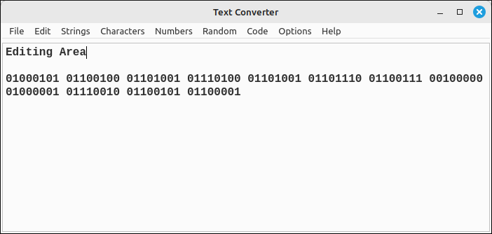

Text Converter User’s Guide¶
Introduction¶
The Text Converter is a simple text and numeric manipulation application that allows the user to do some specialized conversions that may not be available in a standard text editor or programming IDE. Many of the options in this program are designed to make text conversions easier, especially for the areas of cryptography and computer graphics.
A detailed description of the functionality can be found for each submenu in their respective menu pages. In general, there are some standard character manipulations, line splitting and joining, whitespace and special character removals, character encoding and decoding common in classical cryptography, numeric base conversions, random number and bit sequence generation, conversion of text to C++ style strings, and a few special code condensing functions common when incorporating code text strings into C++ programs, such as incorporating GLSL shader code into a graphics program. There are also several options that user can set.
The Text Converter was not designed to be a general text editor but to be used alongside more sophisticated editors, IDEs, word processors, or computer algebra systems. When a conversion is selected from the menu, that conversion is applied to the entire document, not just a selection. So the main mode of use is to copy and paste the text that needs to have a special conversion from the more sophisticated editor, do the necessary conversion, and then copy and paste the result back into the other editor.
The program layout is simple, an editing area takes the major portion of the window with a menu at the top for all the conversions options.
